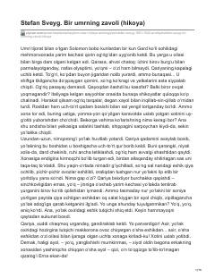

BUOta va qiz o‘rtasidagi murakkab munosabatlar va kutilmagan fojiali haqiqat haqidagi hikoya.
Ushbu hikoyada o‘z oilasining farovonligi uchun tinimsiz mehnat qilgan otaning qizi haqidagi kutilmagan va og‘riqli haqiqatga duch kelishi tasvirlanadi. Muallif inson ruhiyatidagi ziddiyatlar, shubha va ota-farzand munosabatlaridagi murakkabliklarni chuqur psixologik tahlil qiladi.